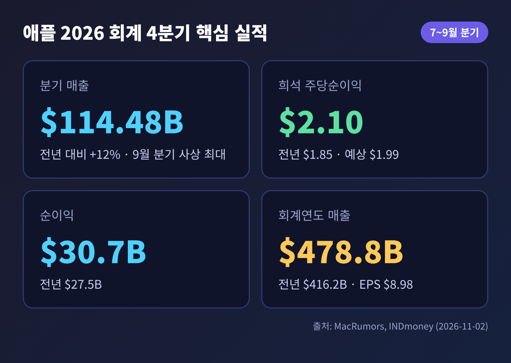
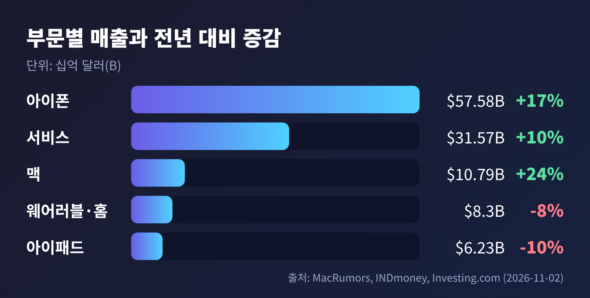
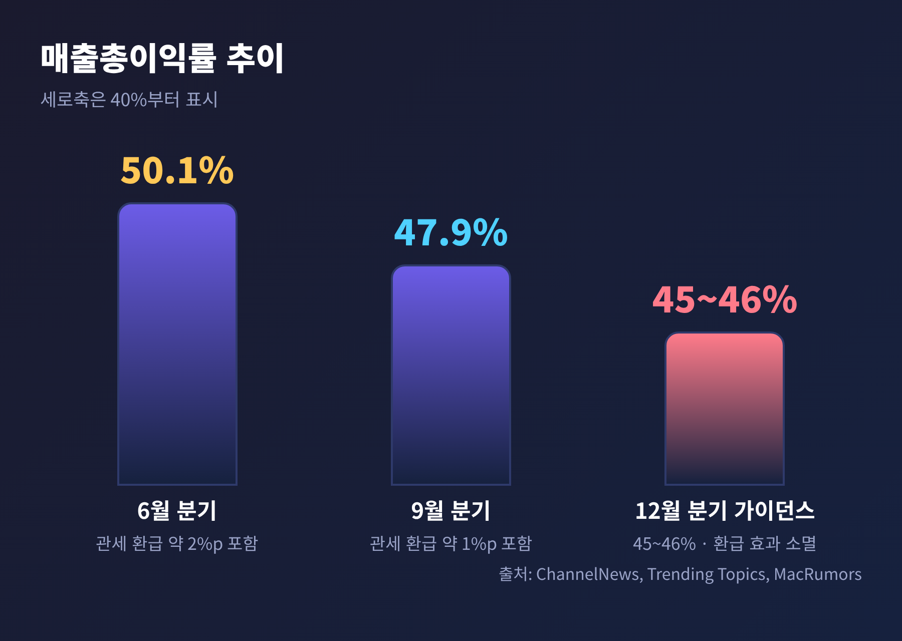
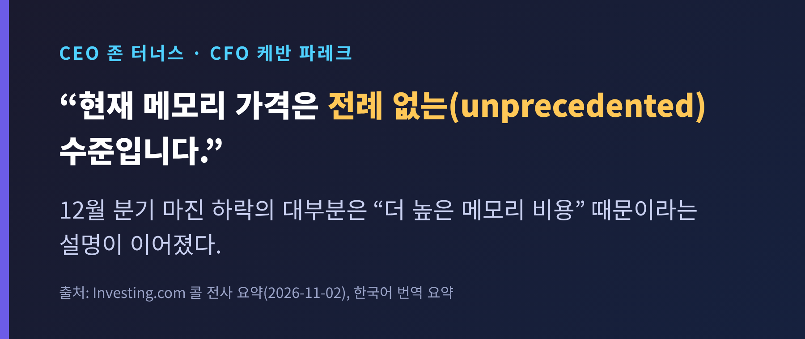
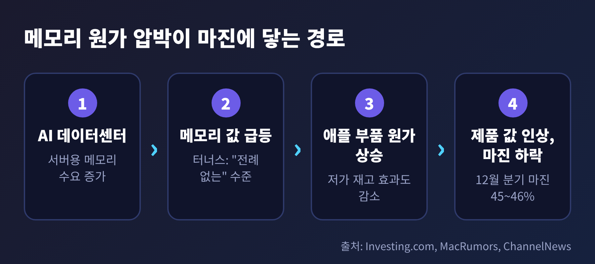
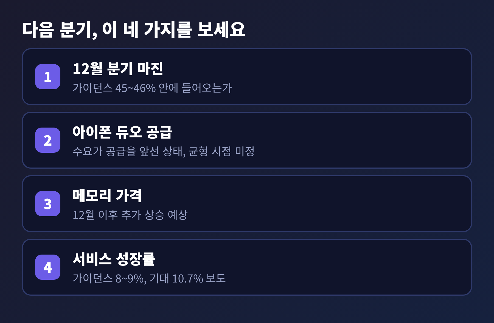

애플 4분기 실적, 매출 사상 최대인데 주가가 내린 이유는 메모리 원가

3줄 요약 - 애플이 11월 2일(현지) 발표한 회계 4분기 매출은 1,144.8억 달러로 9월 분기 기준 사상 최대였고, 전년 대비 12% 늘었습니다. - 그러나 12월 분기 매출총이익률 가이던스가 45~46%로 제시되면서 주가는 정규장에서 1.83% 내렸습니다. - 핵심 변수는 AI 데이터센터 수요로 치솟은 메모리 가격이며, 존 터너스 CEO 체제의 첫 시험대가 되었습니다.
오늘은 애플의 2026 회계연도 4분기 실적을 정리해 보려 합니다. 숫자는 좋았는데 시장 반응은 차가웠던 이유를 짚어 봅니다. 매출, 부문별 성적, 마진 전망, 메모리 가격 순서로 살펴보겠습니다.
※ 이 글은 공개된 실적 보도를 해설한 것이며, 특정 종목의 매수·매도를 권하는 투자 권유가 아닙니다.
무슨 일이 있었나: 기록은 세웠지만 반응은 엇갈렸다
애플은 11월 2일 월요일 장 마감 후 7~9월 분기 성적표를 내놓았습니다.
매출은 1,144.8억 달러였습니다. 1년 전 1,025억 달러에서 12% 늘었고, 시장 예상치인 약 1,134억 달러도 1%가량 웃돌았습니다. 희석 주당순이익은 2.10달러로 예상 1.99달러를 넘겼습니다. 순이익은 307억 달러입니다.
회계연도 전체로 보면 더 인상적입니다. 매출 4,788억 달러, 주당순이익 8.98달러로 모두 역대 최고입니다. 전년 매출 4,162억 달러와 비교하면 15% 증가한 셈입니다.

그런데 주가는 반대로 움직였습니다. 11월 2일 정규장 종가는 338.32달러로 직전 거래일보다 1.83% 내렸습니다. 실적 발표 직후 시간외에서는 잠시 오르는 듯했으나, 콘퍼런스콜이 진행되면서 방향이 바뀌었다고 보도되었습니다. 시간외 낙폭은 매체마다 0.25%에서 2.8%까지 다르게 집계되어, 이 글에서는 정규장 수치만 기준으로 삼겠습니다.
부문별로 뜯어 보면: 아이폰과 맥이 끌고, 아이패드와 웨어러블이 처졌다
숫자를 부문별로 나누면 온도 차가 뚜렷합니다.
아이폰은 575.8억 달러로 17% 증가했습니다. 맥은 107.9억 달러로 24% 늘어 예상치(96.1억 달러)를 크게 넘겼습니다. 터너스 CEO는 "회계연도 기준으로 이렇게 많은 맥을 판 적이 없다"고 말했습니다.
반면 아이패드는 62.3억 달러로 10% 줄었고, 웨어러블·홈·액세서리는 83.0억 달러로 8% 감소했습니다. 둘 다 예상에 못 미쳤습니다. 중화권 매출도 175.4억 달러로 21% 늘었으나, 시장이 기대한 185억 달러대에는 닿지 못했습니다.

서비스 부문은 315.7억 달러로 분기 사상 최고였습니다. 증가율은 10%이고, 시장 예상과 거의 같았습니다. 설치 기반 활성 기기는 25억 대를 넘었고, 유료 구독은 15억 건을 웃돕니다. 서비스는 매출의 27.6%에 불과하지만 매출총이익에서는 약 43.7%를 차지한다는 계산도 나왔습니다(INDmoney 집계). 애플의 이익 체력이 어디서 나오는지 보여 주는 대목입니다.
한 가지 짚어 둘 점이 있습니다. 이번 분기에는 아이폰 18 프로가 열흘이 채 안 되는 기간만 팔렸고, 폴더블 '아이폰 듀오'는 분기가 끝난 뒤인 10월에 나왔습니다. 신제품 효과는 아직 숫자에 거의 담기지 않았다는 뜻입니다.
왜 중요한가: 시장은 지난 분기가 아니라 다음 분기를 봤다
주가를 움직인 것은 이번 성적이 아니라 다음 분기 전망이었습니다.
애플은 12월 분기 매출이 전년 대비 7~10% 늘 것이라고 밝혔습니다. 케반 파레크 CFO는 "회사 역사상 매출이 가장 높은 분기"가 될 것이라고 말했습니다. 여기까지는 좋은 소식입니다.
문제는 이익률입니다. 12월 분기 매출총이익률 가이던스는 45~46%였습니다. 이번 분기 47.9%보다 2%포인트 안팎 낮은 수준입니다. 파레크 CFO는 하락분의 대부분이 "더 높은 메모리 비용" 때문이라고 설명했습니다.
여기에 서비스 성장률 가이던스도 8~9%로 제시되었습니다. 로이터를 인용한 보도에 따르면 애널리스트 기대치는 10.7%였습니다. 서비스가 이익의 핵심이라는 점을 떠올리면 아쉬운 숫자입니다.

결국 예전엔 팔면 팔수록 이익이 더 빠르게 불어났다면, 지금은 더 팔아도 남는 몫이 줄어드는 국면입니다. 한 매체는 가이던스 중간값으로 계산해 12월 분기 영업이익이 전년보다 약 1% 줄어들 수 있다고 추정했습니다. 어디까지나 해당 매체의 추정이지만, 매출이 8~9% 늘어도 영업이익이 제자리일 수 있다는 점이 시장을 불안하게 한 이유로 읽힙니다.
배경과 쟁점: AI 데이터센터가 만든 메모리 가격 쇼크
이번 사안의 뿌리는 메모리 반도체입니다.
팀 쿡 전 CEO는 7월 실적 발표에서 메모리 가격 급등을 "100년에 한 번 있는 홍수"에 빗댔습니다. 원인의 하나로 AI 데이터센터 수요를 꼽았습니다. 서버용 메모리에 생산 역량이 쏠리면서 스마트폰과 PC용 메모리를 사야 하는 기업은 더 비싼 값을 치르게 되었다는 이야기입니다.
터너스 CEO도 이번 콜에서 현재 메모리 가격을 "전례 없는" 수준이라고 표현했습니다. 12월 이후에도 추가 상승이 예상되고, 값싼 재고로 버티던 효과는 갈수록 줄어듭니다.


애플의 대응은 두 갈래입니다. 하나는 가격 인상입니다. 맥과 아이패드는 6월 말, 아이폰은 9월에 값을 올렸습니다. 다른 하나는 물량 확보입니다. 제조 구매 약정이 6월에서 9월 사이 330억 달러 늘었습니다. 다만 이는 앞으로 지급하기로 한 약정일 뿐 이미 쓴 돈은 아닙니다.
공급 제약도 풀리지 않았습니다. 9월 분기에는 첨단 공정 칩 생산능력이 걸림돌이었고, 12월 분기에는 맥과 아이패드가 메모리 확보 문제로 제약을 받을 전망입니다. 아이폰 듀오는 수요가 공급을 앞서지만 균형이 언제 맞춰질지는 말하지 못했습니다.
여기에 관세 환급 효과가 걷힌다는 변수가 있습니다. 6월 분기 마진 50.1%에는 환급분 약 2%포인트가, 이번 분기 47.9%에는 약 1%포인트가 들어 있었습니다. 애플은 환급 대부분을 이미 받았다고 밝혔습니다. 환급을 빼면 이번 분기 마진은 약 46.9%로, 12월 가이던스와의 격차가 그리 크지 않다는 해석도 가능합니다.
Siri AI 비용도 변수입니다. 클라우드 운영 비용은 서비스 매출원가로 먼저 잡히는데, 번들 매출은 시간에 걸쳐 인식됩니다. 단기적으로 마진을 누르는 구조입니다.
참고로 이 이야기는 메모리를 파는 쪽의 호황과 짝을 이룹니다. 메모리 가격 상승은 메모리 제조사에는 수익 요인이고, 사서 쓰는 완제품 기업에는 원가 부담이라는 점에서 같은 현상의 양면이라 할 수 있습니다. 다만 애플 발표만으로 개별 메모리 기업의 실적을 단정할 수는 없습니다.
터너스 체제의 첫 시험
이번 발표는 존 터너스 CEO의 첫 실적 콘퍼런스콜이었습니다. 애플은 4월 20일 하드웨어 엔지니어링을 이끌던 터너스를 차기 CEO로, 팀 쿡을 이사회 의장으로 발표했습니다. 터너스는 9월 1일 취임했습니다.
첫 성적표는 겉으로 화려합니다. 사상 최대 분기 매출, 회계연도 최고 매출과 주당순이익이 있습니다. 하지만 같은 자리에서 마진 하락을 예고해야 했습니다. 메모리 가격은 CEO의 의지로 통제할 수 없는 변수입니다. 터너스가 풀어야 할 과제는 제품 경쟁력보다 원가 구조 관리에 가깝다는 평가가 나올 만합니다.
주주환원은 흔들리지 않았습니다. 분기 중 280억 달러를 돌려주었고, 그중 자사주 매입이 240억 달러였습니다. 분기 배당은 주당 0.27달러이며 11월 16일에 지급됩니다. 현금과 시장성 유가증권은 1,370억 달러입니다.
전망: 확인할 것은 네 가지
앞으로 지켜볼 지점을 정리하면 이렇습니다.

첫째, 12월 분기 실제 마진이 가이던스 45~46% 안에 들어오는지입니다. 둘째, 아이폰 듀오의 공급 균형 시점입니다. 수요가 앞선다면 매출에는 호재지만 공급이 따라가지 못하면 기회 손실이 됩니다. 셋째, 메모리 가격이 12월 이후 얼마나 더 오르는지입니다. 넷째, 서비스 성장률이 가이던스 8~9%에 머무는지, 법원 판결과 모바일 게임 부진, 환율 영향이 얼마나 지속되는지입니다.
주가도 변수입니다. 애플 주가는 최근 12개월 동안 약 30% 올라 다른 대형 기술주보다 잘 버텨 왔습니다. 후행 주당순이익 기준 배수는 약 36.6배로 계산되었습니다(INDmoney). 기대가 이미 높았기에 작은 실망에도 민감하게 반응했다는 읽기가 가능합니다.
정리하면 이렇습니다.
이번 실적은 "얼마나 팔았는가"보다 "팔고 나서 얼마가 남는가"를 묻고 있습니다. 매출은 기록을 갈아치웠지만, AI 시대의 부품 값은 가장 강한 기업의 이익률까지 흔들고 있습니다.
다음 분기 성적표에서 마진이 가이던스 안에 머문다면, 이번 주가 반응은 과민했다는 평가가 나올 수 있습니다. 반대로 메모리 가격이 더 오른다면 이 질문은 한동안 따라다닐 것입니다. 숫자가 말해 줄 때까지 차분히 지켜보시길 권합니다.
※ 본 글은 투자 권유가 아니며, 투자 판단과 그 결과에 대한 책임은 투자자 본인에게 있습니다.
출처: MacRumors(11/2), INDmoney(11/2), Investing.com(11/2), TheWrap(11/2), Yahoo Finance(11/1), Finviz(10/26), ChannelNews(7/31), Trending Topics(7/31)